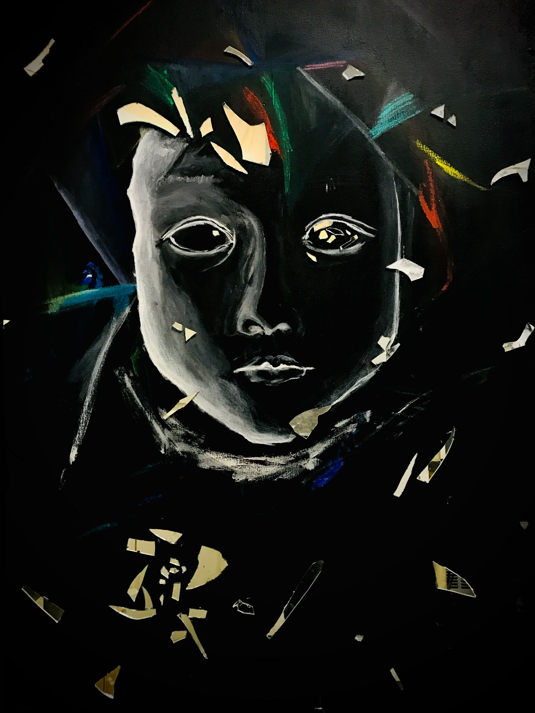
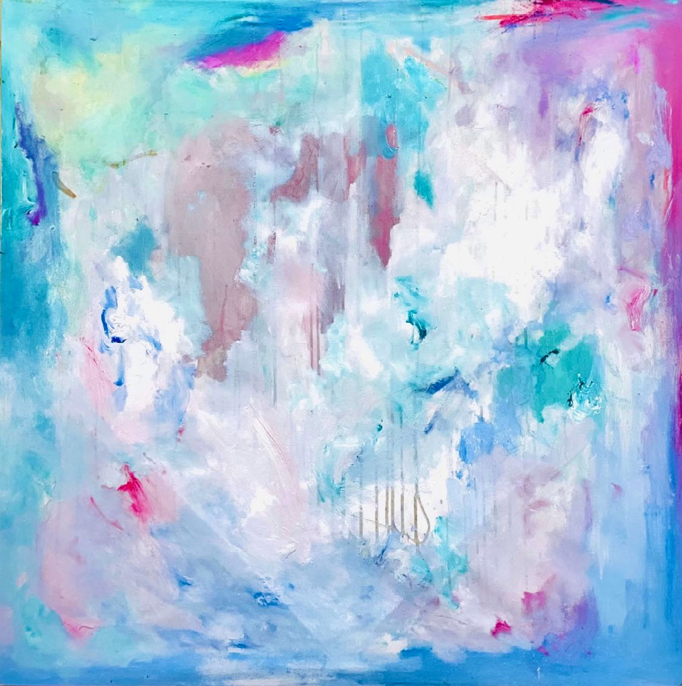
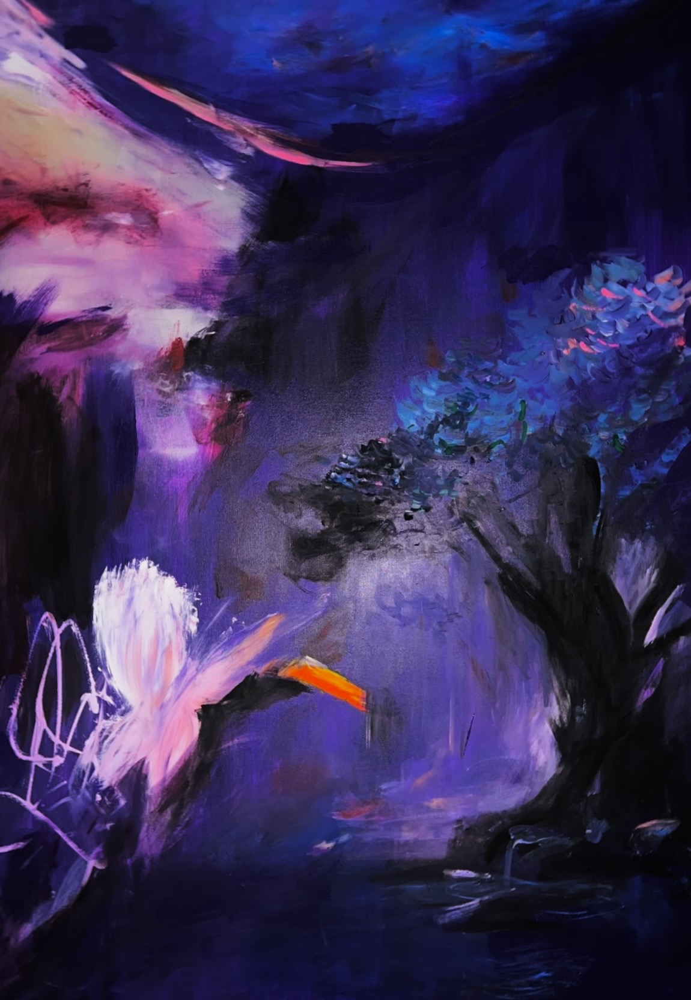
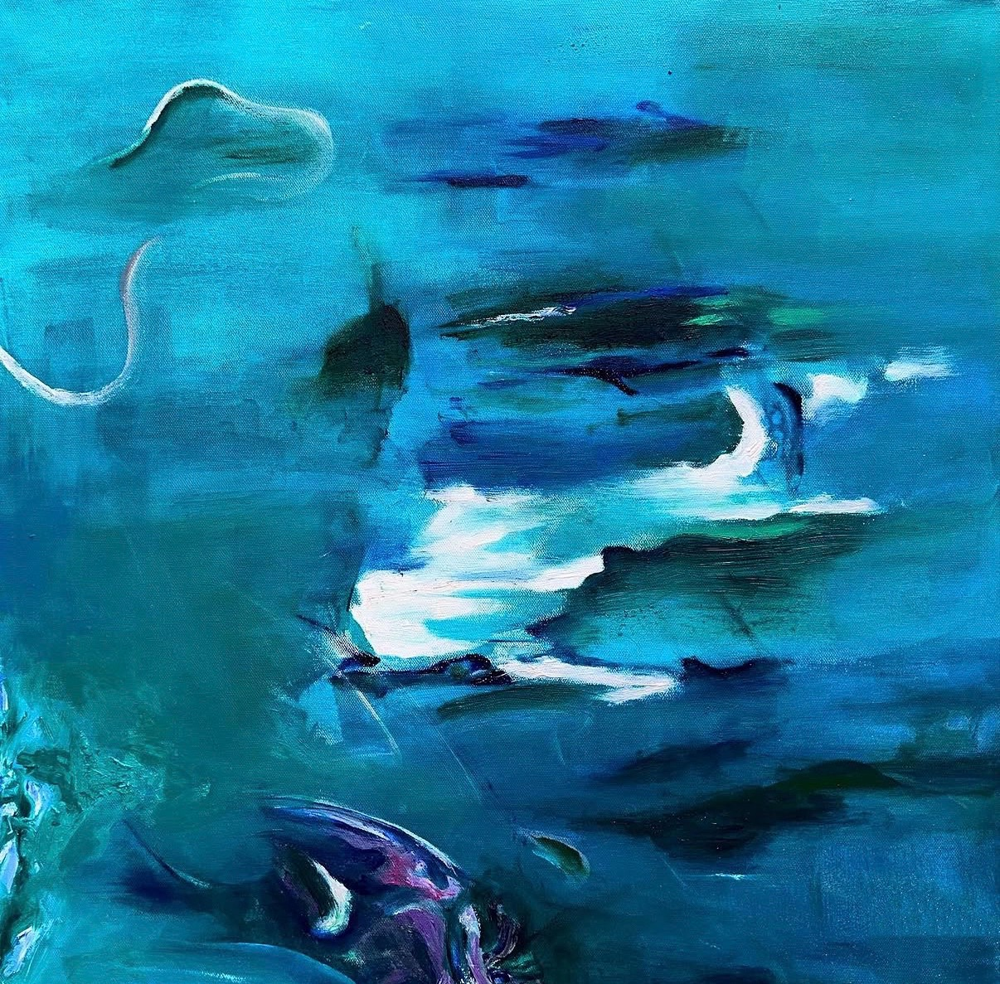
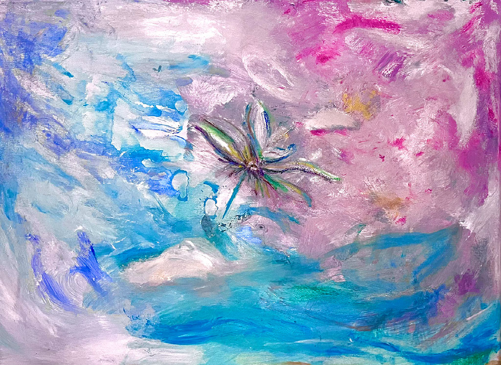
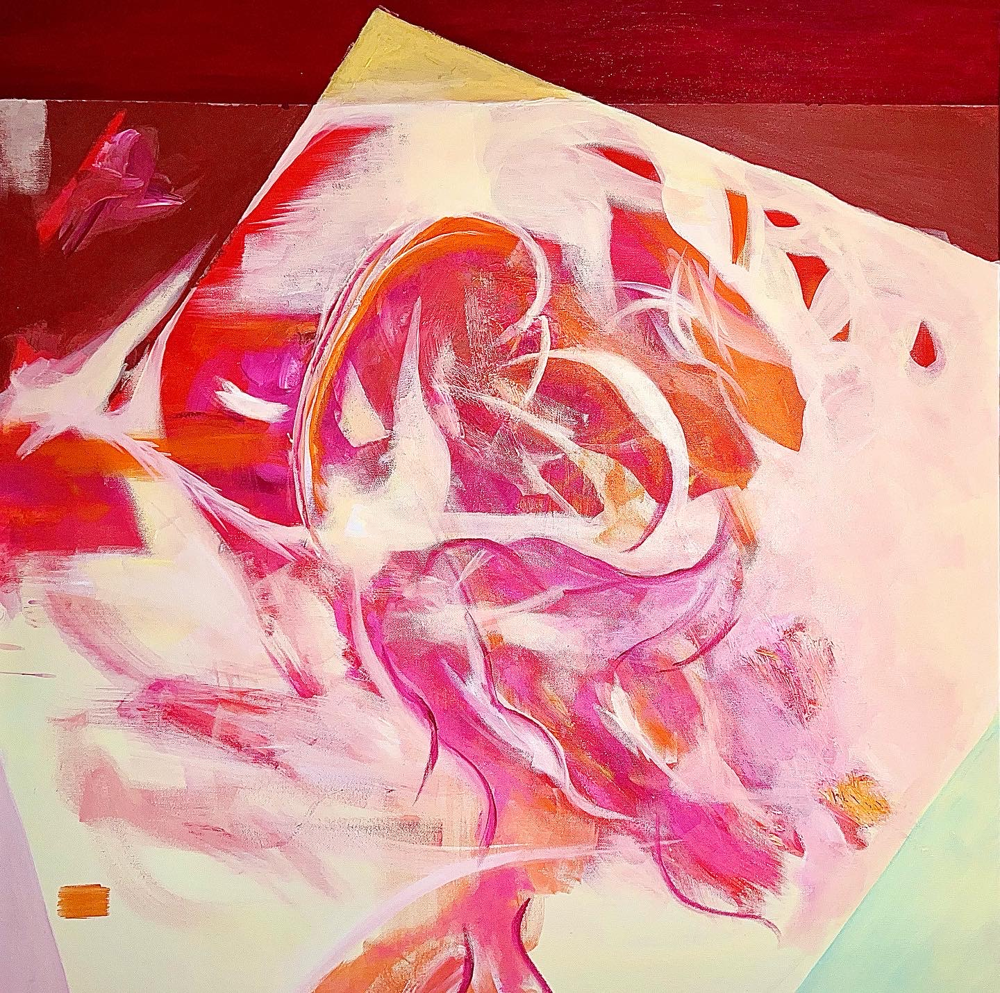

Jenny
Yu
Fragments of Light
Vol. IFragments
of Light
A Collection by Jenny Yu · 2020–2024
02Born Between
Worlds
I was born on a plane. literally between worlds, mid-flight, mid-journey, belonging to no single place. I grew up in Shanghai and later studied in New York, Florence, and Paris. I have lived my entire life in the in-between.
When I moved to the United States as a teenager, I was lost in the way that only displacement can create—not just geographically, but emotionally. I didn't have the words for what I was feeling. So I picked up a brush.
Painting gave me what nothing else could: clarity. A way to see myself. A way to process a world that felt overwhelming, beautiful, and confusing all at once. Art didn't just become something I loved—it became how I found direction.
That experience never left me.
It became the question I carry into everything I do: what if more people had access to that clarity through my painting? What if art was not only experienced in galleries, but lived with—as a way to understand, to feel, to find clarity.
This belief continues to shape my work—creating immersive, atmospheric paintings that reflect inner landscapes and emotional states, inviting moments of stillness and reflection.
I don't seek to be remembered. I want the work—and the lives it touches—to carry forward long after I'm gone.
Then it begins…

About
the Artist
Jenny Yu (b. 1986) is a Manhattan-based artist whose work explores the intersection of emotional healing, memory, and sensory experience. Drawing inspiration from impressionist softness and abstract expression, her paintings evoke a dreamlike stillness — spaces where viewers are invited to slow down, reflect, and reconnect with themselves.
With a background in Economics and Art History from NYU, Jenny bridges the analytical and the intuitive. Her practice extends beyond the canvas into immersive art salons and curated experiences, where art becomes not only something to observe, but something to feel.
Her work is deeply rooted in the belief that art has the power to heal, connect, and transform emotional landscapes.
06
幽玄 (2020–2024)
幽玄
YŪGEN 幽玄 speaks to an elusive, intangible authenticity of beauty—one that cannot be fully seen or defined, but quietly felt within an object or moment. It is a presence rather than a form.
I began this painting in 2020, during the stillness of the pandemic, carrying a sense of unease and disappointment within myself. When I returned to it a year later, something had shifted. Where there was once heaviness, I began to notice light.
That passage of time transformed not only the work, but my way of seeing. Through darkness, I learned to recognize subtle radiance.
Yūgen, to me, is the understanding that beauty lives in ambiguity—in imperfection, in the unseen, and in the space where imagination completes what reality cannot.

The Edges of Dreams (2023)
The Edges of Dreams
The boundaries of reality sometimes can be blurry, form dissolves and certainty gives way to feeling.
Layers of color move like shifting emotions—soft, luminous, and unresolved. I approached this painting as a process of release. The warmth seeps through in quiet bursts, while cooler tones hover like passing thoughts, never settling long enough to be named. There is no fixed subject, only a presence—something felt rather than seen.

A Quiet Between Worlds (2026)
A Quiet Between Worlds
I am drawn to the moments that do not fully belong anywhere—the in-between states where something is neither arriving nor leaving. This painting lives in that quiet threshold. It feels like a place, but also like a memory of a place, dissolving as you try to hold onto it.
The glowing forms suggest presence, yet they never fully materialize. Light emerges from within the darkness, but instead of revealing, it softens and obscures. In this way, the work exists in contradiction: it is both intimate and distant, vivid and unreachable. What is illuminated is not clarity, but ambiguity.
I began this piece with dark mixed purple on canvas, allowing the pigments to blend and resist each other organically. I was interested in how colors could create depth without defining form. How something could feel alive without being fully seen?
Through this process, I am not trying to depict a world, but a state of being, one that exists quietly between what is and what is felt.

Drifting Between Tides (2023)
Drifting Between Tides
There is a space between movement and stillness, where form loosens and certainty begins to dissolve. In this in-between, nothing fully belongs to the past or the present. It simply drifts.
I began this painting intuitively, allowing each gesture to follow a feeling rather than a defined image. Shapes emerged like fragments of memory, appearing and disappearing within layers of blue. Some areas feel held, while others slip away, as if pulled by an unseen current.
I am drawn to this state of suspension. It is a quiet tension of being neither anchored nor lost. The tides do not ask where you are going; they only carry you. In that surrender, there is both disorientation and peace.
This work reflects a moment of becoming, where clarity is not yet formed, but something deeper is already understood.

The Pull (2023)
The Pull
This piece captures the feeling of being carried. Carried by water, by time, by something larger than yourself.
Soft yet dynamic brushstrokes swirl around a luminous, jellyfish-like form, creating a sense of both movement and stillness. Layers of deep ocean blues blend into airy turquoise and flashes of green, evoking a dreamlike underwater current. It is fluid, immersive, and calming.

Flowing Lilium (2022)
Flowing Lilium
Do you feel the breeze? It's a lily flowing with the stream, drifting along the predetermined path in the vast ocean. It is so insignificant and yet so free. It is a small life appreciating their existence in the world.
A quiet moment where color softens into feeling. This piece captures the space between movement and stillness—where water, sky, and memory dissolve into one another, and something delicate begins to bloom.

Love (2020)
Love
If love were a color, I think it would be pink; maybe it will come with flaming red, warm yellow, dreamy pink, and a drip of chocolate.
Love comes in different forms. It expands, dissolves, and reforms all at once.
Love, to me, is not something we can fully define. It is something we move through.

Lucid Dreaming (2022)
Lucid Dreaming
I am fascinated by the concept of shadows. Shadows outline the shapes of an object but fill it with voids. On one hand, they reveal the essence of the object. On the other hand, they capture nothing.
I started this artwork as an oil painting on canvas and later transformed it into a digital piece. I utilized patterns to capture the compounded effects of color, trying to create an illusion of shadows. Then, I used Procreate to transform this traditional oil painting into a digital work. Digital media allows me to magnify such effects of color through the contradiction in colors and saturation. In this way, I am magnifying both nonexistence and existence.
Exhibition
History
- 2026Meng's Gallery, Noho, New York
- 2026Williamsburg Penthouse Private Art Viewing, New York
- 2025UN Conference Yacht Charity Art Auction, New York City
- 2025Hamptons Art Auction, New York
- 2024Huangpu River Solo Art Show, Shanghai, China
- 2023Chelsea Solo Art Show, New York
Jenny
Yu
- StudioNew York, United States
- EmailJennyprivategallery@gmail.com
- GalleryJenny Yu Private Gallery
- Webjennyprivategallery.com
- Instagram@jennyfinearts